Xin Yao
M.Sc. in Computer SciencePolitecnico di Torino, Italy
Holding a work permit in Switzerland (B-CH)
Currently living in Zurich, Switzerland
LinkedIn / Email / Github / Google Scholar / CV
About Me
I am a Master's graduate in Computer Science (Study Program: ICT for Smart Societies) from Politecnico di Torino, Italy. I am very interested in the research and development of Machine Learning, Computer Vision, Robotics, VR/AR/MR, and Healthcare.
I wrote my Master's thesis at the Department of Control and Computer Engineering, supervised by Prof. Alessandro Aliberti and Prof. Edoardo Patti. My thesis was published as a paper at the 2023 IEEE International Conference on Computers, Software, and Applications. Before my Master's studies, I worked as a Robotics Engineer for two years at Kunshan Intelligent Equipment Research Institute, a subsidiary of Shenyang Automation Research Institute. Before that, I got my Bachelor's degree in Electronic Science and Technology with distinction from Southwest University, with two patents on intelligent devices.
Education
Master of Science, ICT for Smart Societies, Politecnico di Torino, Italy, Oct. 2019-Oct. 2022
Bachelor of Science, Electronic Science and Technology, Southwest University, China, Oct. 2013-Jun. 2017
Work Experience
Software Engineering Intern, Syncroweb, Italy, Feb. 2023-May. 2023
Robotics Engineer, Kunshan Intelligent Equipment Research Institute, China, Oct. 2017-Sep. 2019
Research Projects
-
MUNet for Blind Compressed Image Enhancement NTIRE Blind Compressed Image Enhancement Challenge, CVPR 2024 CodeIn this project, I developed MUNet, a network to enhance compressed image quality. It outperformed previous methods by 0.26 dB on PSNR. I co-authored the final report for NTIRE challenges in CVPR 2024.
- 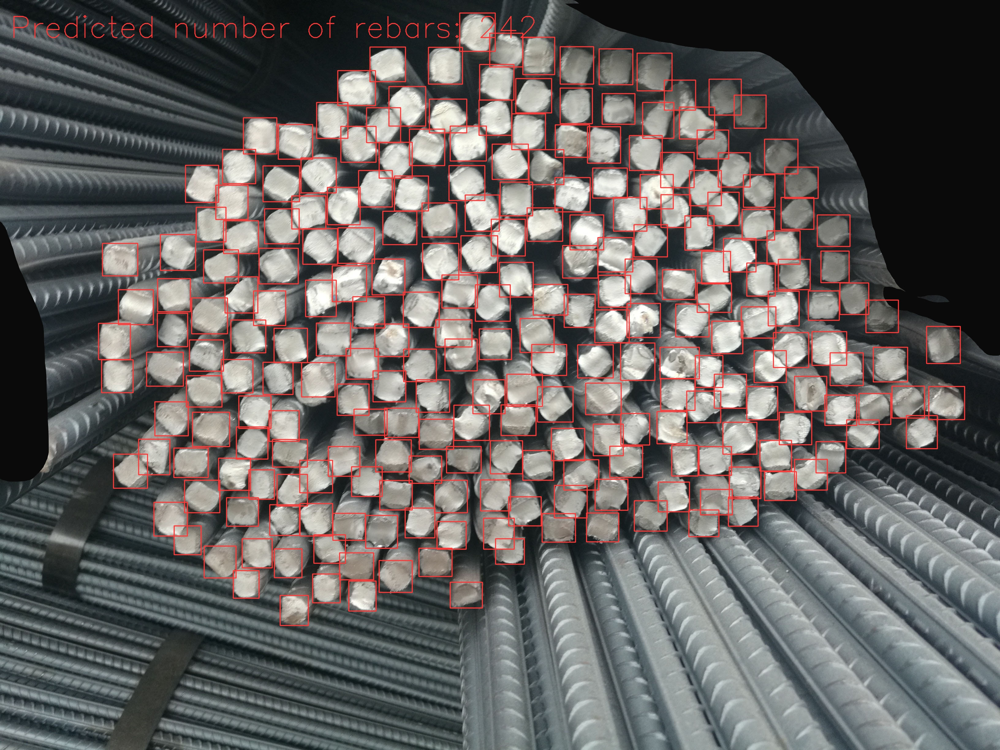
YOLOv9 for Dense Object Detection and Counting Project Work, 2024 Project Page CodeIn this project, I tackled the challenge of detecting and counting dense objects, which is difficult due to their small size and large numbers in a single image. Using YOLOv9, I implemented a method for dense object detection and counting on a rebar dataset from real production environments. This achieved a state-of-the-art accuracy of 98%. I also open-sourced the code with a well-documented report.- 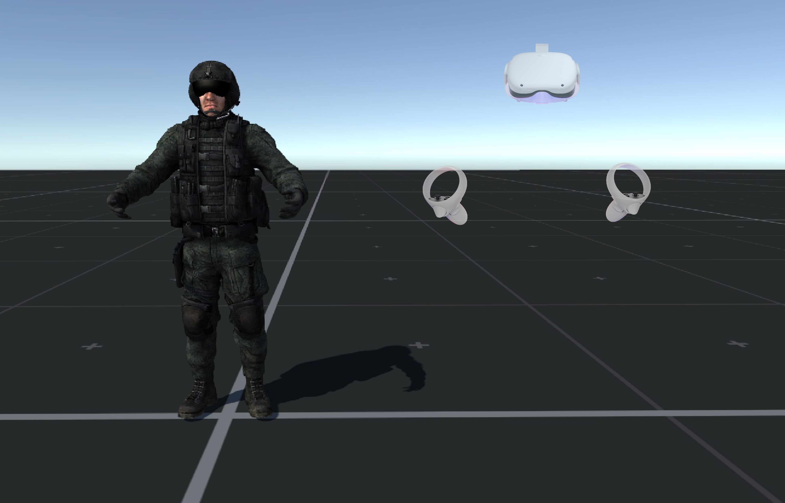
Full Body Tracking and Animation for Immersive Mixed Reality Project Work, 2024In this project, I tackled the challenge of full body motion tracking in VR/AR applications to enhance immersion. Using VRIK and deep learning models, I implemented methods to estimate full body motion from sparse tracking signals. Additionally, I developed a real-time data recording and visualization framework in Unity for common human motions using a Meta Quest headset and two controllers.- 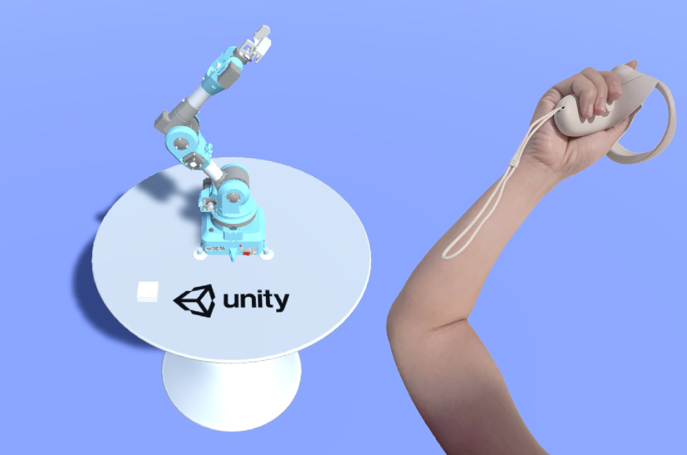
QuestTeleop: Robotic Teleoperation using a Meta Quest Headset Project Work, 2023In this project, we aim to revolutionize teleoperation in high-risk environments. Using VR headsets, our system offers users a highly responsive and intuitive interface for controlling robotic appendages in real-time. Hand pose is captured using Unity, and the robot arm's joint angles are solved using Bio IK. Users can teleoperate the robotic system using only a Meta Quest headset.- 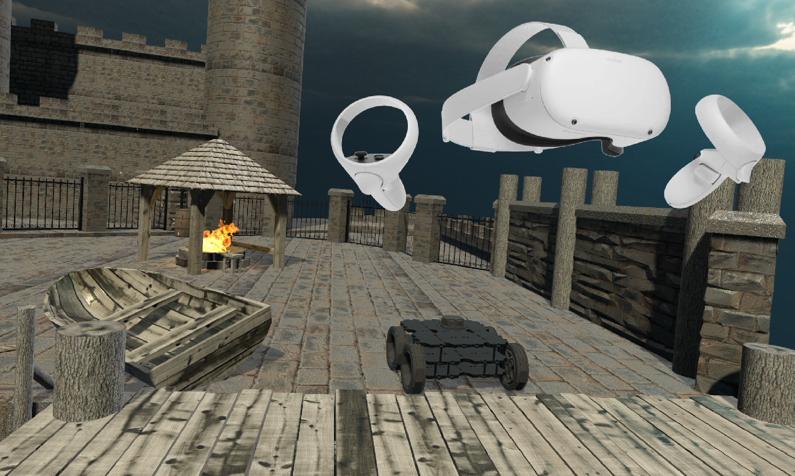
SLAM in Virtual Reality using Unity and ROS Project Work, 2023In this project, I created a framework for SLAM in VR games, enhancing user engagement and aiding developers in refining navigation algorithms. Users explore an old seaport in a robot car in Unity, with the robot's perspective transmitted to ROS2 for SLAM.
Robotic Search and Rescue with a Simulated Ground Robot Project Work, 2023 Code
Machine Learning Methodologies for Airfare Prediction
Master Thesis, Politecnico di Torino, 2022
2023 IEEE International Conference on Computers, Software, and Applications
Publication
Project Page Thesis Paper
In this thesis, we compared traditional and deep learning methods for airfare prediction. Our Bayesian neural network, utilizing Bayesian Inference, outperformed traditional methods on a dataset of 10,683 domestic routes in India from March to June 2019. Future work includes expanding the dataset and integrating time-series information for better predictions.- 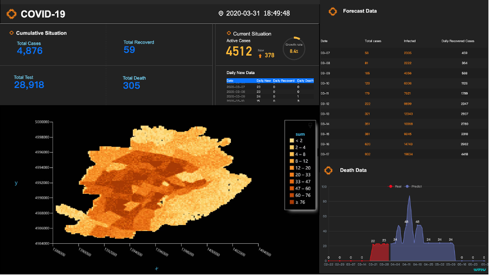
Modeling Propagation with Agent-Based Models (ABM) for COVID-19 Diffusion
Project Work, Politecnico di Torino, 2021
Project Page
In this project, we trained a model with past epidemic data, adjusting parameters for early-stage pandemic conditions. Then, we predicted future pandemic trends and assess policy impacts. Our results demonstrate the model's value for pandemic prediction.ARIMA Models for Car Sharing Prediction
Project Work, Politecnico di Torino, 2021
Project Page
This project uses ARIMA models to predict car rental data in Milano and Munich for car2go, and Milano for enjoy in October 2017. Missing data is cleaned by replacing it with the mean of the same time bin. Munich's car2go data shows the smallest MSE, indicating good consistency. Residuals across all cities resemble a uniform distribution, suggesting model effectiveness.Forecast of Home Energy Consumption
Project Work, Politecnico di Torino, 2021
Project Page
In this project, we focused on a residential building in Rome and studied the effect of HVAC parameters. Due to climate change throughout the year, we also modified the settings or schedules of heating, cooling, and ventilation. In the end, we proposed the implementation of a series of models for the forecast of home energy consumption (LSTM, Regression neural network, Hidden Markov model, and Prophet).A Smart Gas Valve for Safe Home
Project Work, Politecnico di Torino, 2020
Project Page
The proposed IoT platform enhances home safety by monitoring gas valves and detecting boiling food. It offers warning strategies to minimize energy waste and responds to temperature sensor alerts. The platform integrates seamlessly into Safe and Smart Home environments, enabling Demand/Response policies and providing energy-aware messages via email or WhatsApp.- 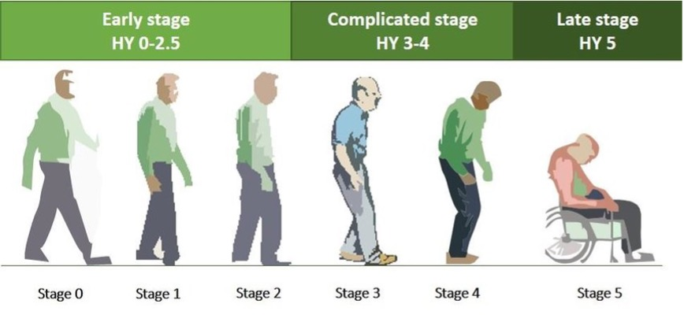
Regression on Parkinsons Telemonitoring Dataset
Project Work, Politecnico di Torino, 2020
Project Page
In this project, we predict total UPDRS scores for Parkinson’s disease using methods like Linear Least-Squares Regression, Ridge Regression, Adam Optimizer, and Conjugate Gradient Descent. We compare their performance to identify the most effective approach for understanding the disease.- 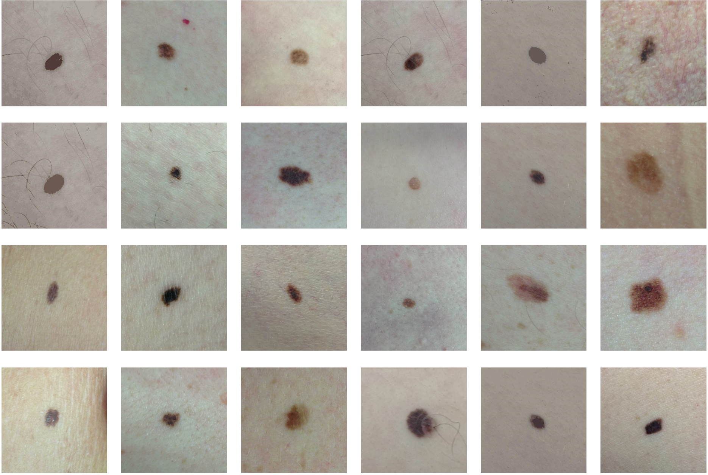
MoleSymmetry: Enhancing Melanoma Diagnosis with Advanced Border and Asymmetry Algorithms
Project Work, Politecnico di Torino, 2020
Project Page
In this project, we developed a Melanoma Diagnosis Algorithm that extracts borders and assesses asymmetry. Through experimental validation on a mole dataset, we demonstrated its effectiveness in diagnosis.- 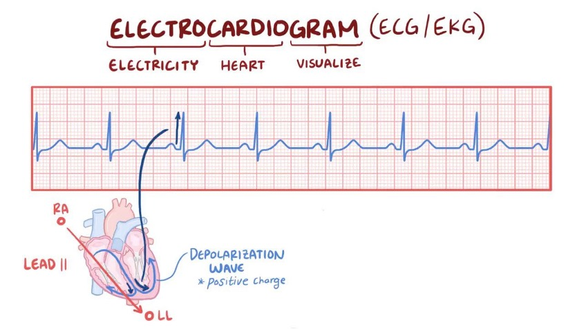
Analysis of Arrhythmia Classification on ECG Dataset
Project Work, Politecnico di Torino, 2019
Project Page
In this project, we use classification methods to analyze arrhythmia data, aiming to improve identification of cardiac arrhythmias. By leveraging machine learning algorithms like decision trees, support vector machines, and neural networks, we aim to create accurate systems for arrhythmia classification, offering insights for diagnosis and treatment.A Method of Small Particle Crop Drying Control
Bachelor Thesis, Southwest University, 2017
Chinese University Student Innovation and Entrepreneurship Project
Patent
Project Page Patent
In this project, a small grain crop drying control system is developed using STM32F103RBT6. It optimizes drying parameters such as temperature and time for different crops, ensuring efficient and high-quality drying while minimizing energy consumption.- 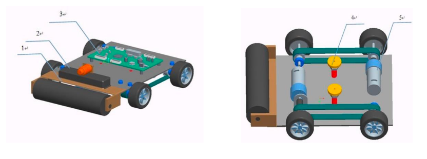
The Design of a Small Intelligent Spraying Device for Wall Surface
Patent
Project Page Certificate Patent
In this project, we introduce new wall-spraying equipment with double suction cups, overcoming limitations of traditional methods. Controlled by the MC9SXS128, it offers safe, efficient spraying with Bluetooth control. The system is innovative, lightweight, and cost-effective.- 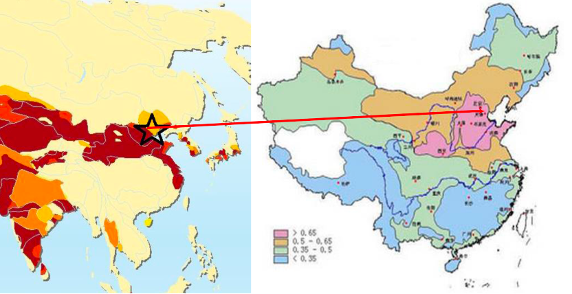
Solutions to Water Scarcity based on Machine Learning
2016 International Mathematical Contest in Modeling (ICM)
Meritorious Winner
Project Page Paper Certificate
In this project, we address water scarcity in North China using population forecasting, neural networks, and regression analysis. We establish water demand and supply models, identifying a gap of 35.8 billion cubic meters. Proposed interventions include building reservoirs and water transfer projects. We also analyze pollution and sewage disposal, discussing the plan's impacts on the ecosystem.Awards
Scholarships
University Scholarship, Jun. 2014
National Inspirational Scholarship, Jun. 2015
National Scholarship, Jun. 2016
Technology Innovation
Grand Prize, The Second Mobile Robot Contest, Science and Technology Committee, May. 2015
Successful Entry Prize, Chongqing Board of Education, Jun. 2015
National Undergraduate Innovation and Entrepreneurship Training Program, Dec. 2015
Meritorious Winner, International Interdisciplinary Contest In Modeling (ICM), Feb. 2016
Second Prize at Southwest University, Research on a Serpentine Robot Device, Jul. 2016
- 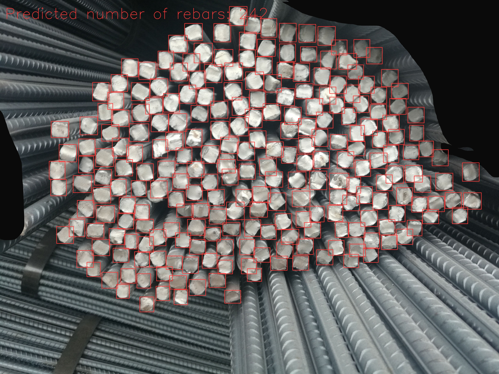